At Hubbard Brook in New Hampshire, scientists have measured rain and stream chemistry since the 1960s. Acid deposition fell sharply after the 1970s, yet the streams recovered far more slowly than expected. The reason was underground: decades of acid had stripped calcium from the soil.
Today you will learn that:
soil holds cations on negatively charged surfaces, counted in charge (cmolc/kg);
acid meets finite inventories: carbonate, exchangeable cations, then aluminium;
equal pH does not mean equal buffering;
retention is not the same as transport.
Last lecture, treatment moved substances from water onto solids. Soil does the same, without an operator.
Hubbard Brook Experimental Forest, New Hampshire, USA. Photo: Mariel Carr, CC BY-SA 3.0, Wikimedia Commons.
Two soils, same pH, different futures
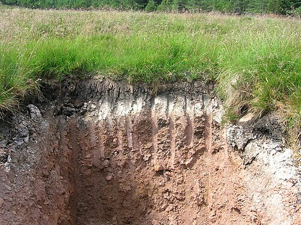
A podzol profile: the pale, leached layer lies just below the surface. Photo: Ailith Stewart, CC BY-SA 2.0, Wikimedia Commons.
Imagine two forest soils, both measured at pH 5.0:
Soil A, a sandy podzol like the one in the photo, typical of much of Sweden’s forest land;
Soil B, a clay loam rich in organic matter.
Both receive the same acid deposition for decades. One keeps feeding calcium to its stream; the other soon releases aluminium.
Question for this lecture: what does a soil contain that a pH reading cannot show?
Soil is several reacting phases
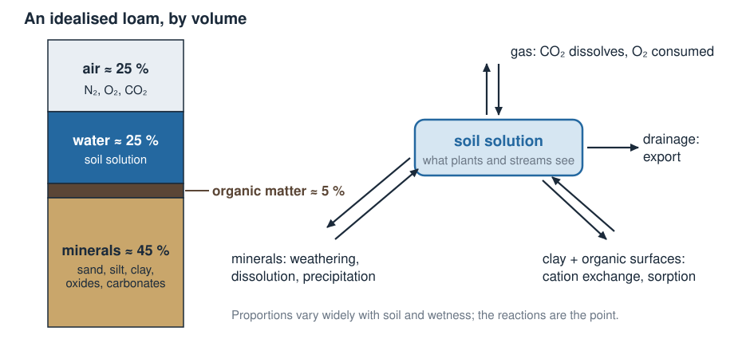
Soil water is the phase that plants take up and streams receive. Its composition is set by exchange with minerals, organic matter and gas. Soil pH describes the water’s state under a stated method. It does not count what the solids can still deliver or absorb.
Where the negative charge comes from
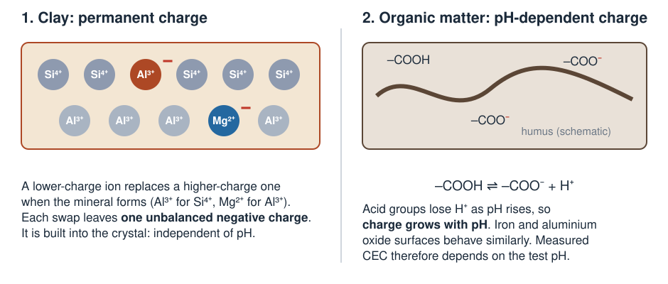
Clay minerals carry permanent negative charge from ion substitution inside the crystal. Organic matter carries pH-dependent charge from acid groups that lose H⁺ as pH rises. Both kinds of charge attract and hold cations from the soil water.
Cation exchange: ions trade places
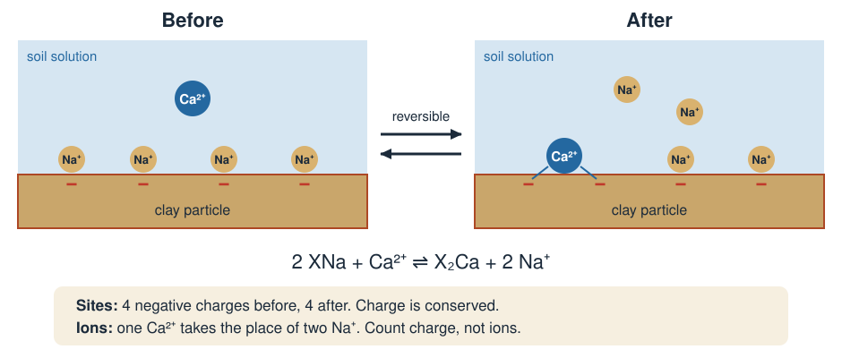
Exchange moves ions between sites and solution without destroying any element. X stands for one unit of negative site charge. A divalent ion occupies two units.
Which cation wins a site?
Two things decide what sits on the exchanger:
Selectivity. Higher charge and a smaller hydrated ion are held more strongly. A rough order is Al³⁺ > Ca²⁺ > Mg²⁺ > K⁺ > Na⁺.
Mass action. A large excess of a weakly held ion can still push others off. Road salt (Na⁺) flushes Ca²⁺ and Mg²⁺ from roadside soils.
So capacity (how many sites) and selectivity (who gets them) are different quantities.
Consequence for acid soils. Al³⁺ is held strongly. Once acid has released aluminium from minerals, Al³⁺ takes over sites that used to hold Ca²⁺ and Mg²⁺. The exchanger then stores acidity instead of nutrients.
Counting exchange capacity
Cation exchange capacity (CEC) is the total negative charge available for exchange, per kilogram of dry soil.
Sand has almost none. Organic matter and swelling clays have a great deal. A few percent of humus can dominate a soil’s CEC.
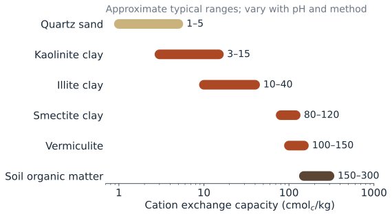
Worked example: from charge to moles
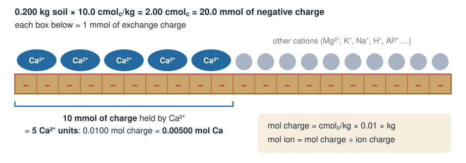
A 0.200 kg sample with CEC 10.0 cmolc/kg holds 0.0200 mol charge. If Ca²⁺ occupies half, that is 0.0100 mol charge, but only 0.00500 mol Ca, because each Ca²⁺ fills two sites.
Base saturation: what fills the sites
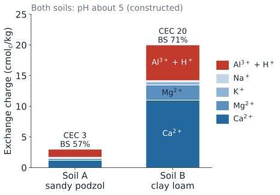
Base saturation is the share of CEC held by the base cations Ca²⁺, Mg²⁺, K⁺ and Na⁺. The rest is mostly Al³⁺ and H⁺.
Our two soils have similar pH. Soil B holds about 8 times more exchangeable base cations than Soil A.
Check yourself
A 0.100 kg soil has CEC 20.0 cmolc/kg. If all sites hold Mg²⁺, how many moles of Mg is that?
Which holds more exchangeable charge: 1 kg of quartz sand or 0.1 kg of humus? Use the CEC ranges.
A soil has CEC 12.0 cmolc/kg and 3.0 cmolc/kg of Al³⁺ + H⁺ on the sites. What is its base saturation?
True or false: “This soil has pH 6, so its exchanger is full of calcium.”
Acid arrives: three ways to consume it
Every pathway uses up something finite. Look at the bottom box: a cation can only leave the soil together with an anion. Sulfate from deposition is the vehicle that carries calcium out to the stream.
Which reaction dominates depends on pH
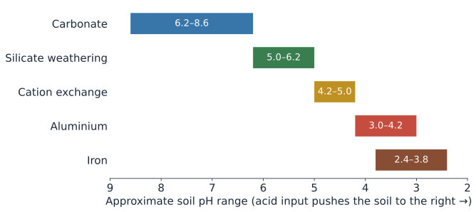
As acid accumulates, soils move from one buffer range to the next: carbonate, then slow silicate weathering, then cation exchange, then aluminium. Each range holds the pH roughly steady while its inventory lasts. The ranges are approximate and overlap.
As in the carbonate lecture, each mole of calcite neutralises 2 equivalents of acid at this endpoint.
Example: 0.0100 mol accessible CaCO₃ can consume 0.0200 mol H⁺.
But protection is not unlimited:
the inventory is used up, not regenerated;
grains coated with iron oxides or gypsum react slowly;
calcite in a different layer from the flow path does nothing.
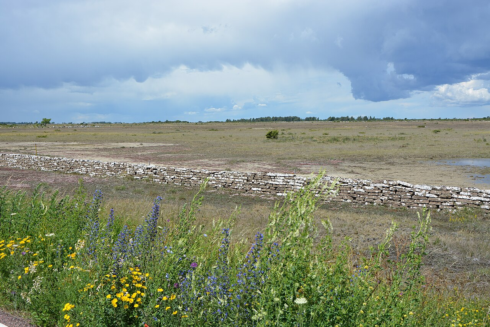
Stora Alvaret, Öland: thin soil on limestone bedrock. Photo: Bernt Fransson, CC BY-SA 4.0, Wikimedia Commons.
Exchange buys time, not immunity
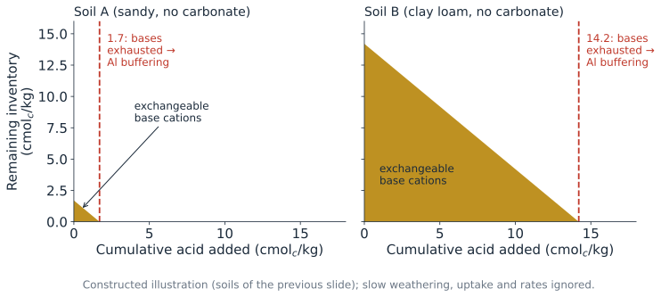
Without carbonate, each equivalent of acid removes one equivalent of base cations from the exchanger. Soil A runs out after 1.7 cmolc/kg; Soil B after 14.2. Until then their pH may look similar. Afterwards, aluminium takes over.
Three H⁺ per Al³⁺, so free Al³⁺ rises 1000-fold per pH unit at mineral equilibrium.
Dissolved inorganic aluminium damages fish gills and fine roots. It was a main cause of fish loss in acidified Scandinavian lakes.
Model: gibbsite equilibrium, log K = 8.11 at 25 °C; free ion only.
Back to Hubbard Brook
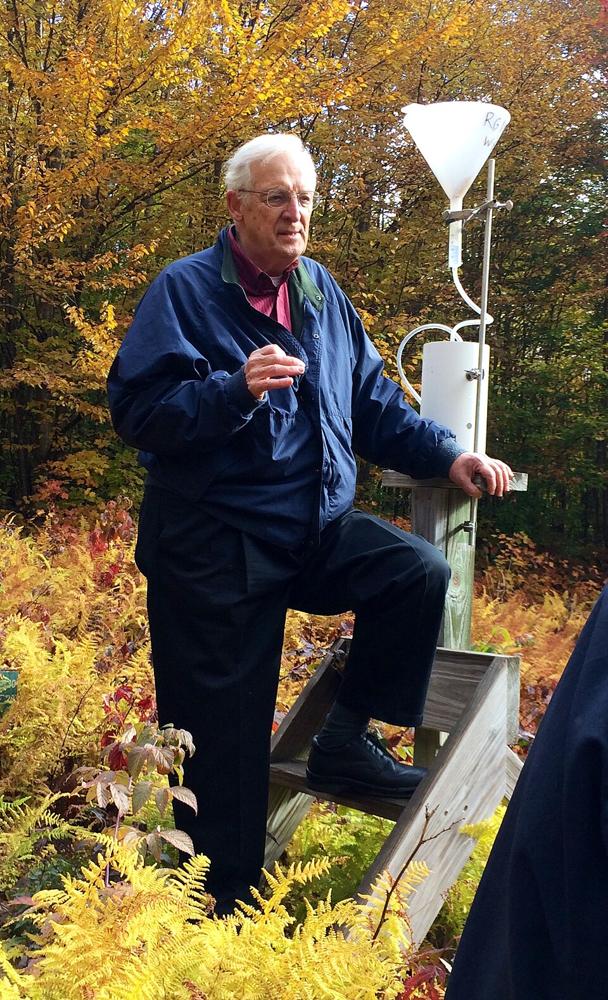
Gene Likens, co-founder of the Hubbard Brook Ecosystem Study, beside a precipitation collector, 2015. Photo: Mariel Carr, CC BY-SA 3.0, Wikimedia Commons.
Long-term records showed large losses of exchangeable calcium from the forest soil. Lower sulfate deposition slowed the loss, but the exchanger refills only as fast as minerals weather.
In 1999 researchers spread a calcium silicate mineral over one whole catchment by helicopter to test the idea.
Constructed estimate: raise base cations by 1.0 cmolc/kg in the top 10 cm of 1 ha (≈ 1.0 × 10⁶ kg soil):
10 000 mol charge = 5000 mol Ca ≈ 200 kg Ca, or ≈ 500 kg CaCO₃.
Retention is not the same as transport
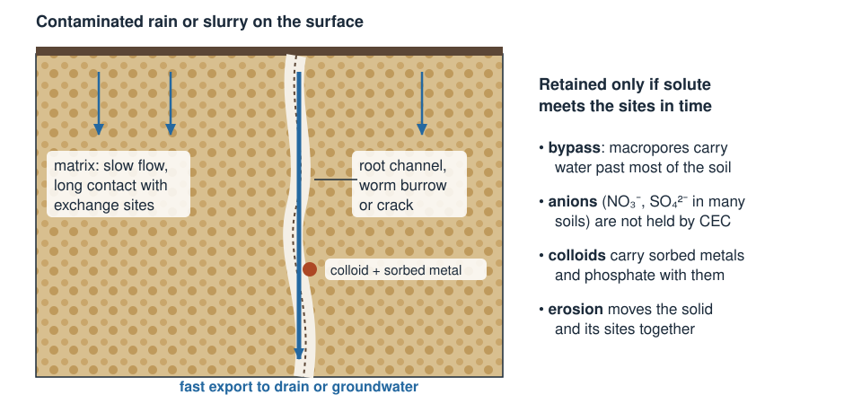
A high CEC protects groundwater only if the solute meets the sites. Water in macropores can bypass most of the soil, anions are not held by cation exchange, and colloids can carry sorbed metals with them.
Fast paths in a real soil
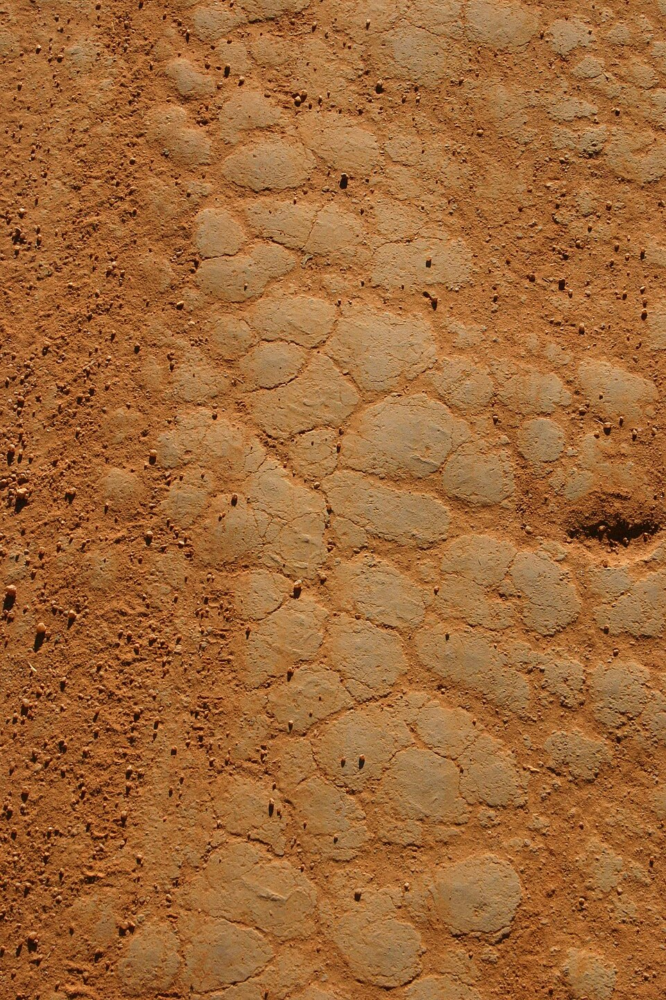
Shrinkage cracks in drying clay, Gauteng, South Africa. Photo: Paul Venter, CC BY-SA 3.0, Wikimedia Commons.
Clay soils with high CEC shrink and crack when they dry. The next heavy rain runs straight down the cracks.
This produces a paradox. The soil with the most exchange sites can deliver a pesticide or phosphate pulse to a field drain within hours, because the water hardly touched those sites.
Fair tests of retention therefore report flow conditions, not only CEC and pH.
The next lecture applies the same thinking to waste heaps: what is inside matters, but so does how water and oxygen get in.
Back to the two soils: what to measure
Measure
Soil A (sandy podzol)
Soil B (clay loam)
pH
≈ 5
≈ 5
CEC (cmolc/kg)
3
20
Base cations (cmolc/kg)
1.7
14.2
Carbonate
none
none
Organic matter, clay
little
much
Fast flow paths
some
cracks when dry
Same pH, different reserves. Soil A acidifies its stream soon; Soil B can neutralise about eight times more acid first.
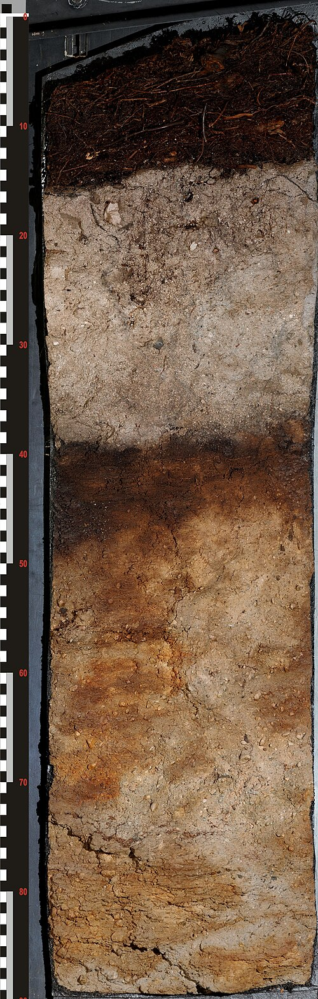
Podzol profile from Sweden, ISRIC World Soil Reference Collection. Photo: D. Creutzberg, CC BY-SA 3.0, Wikimedia Commons.
Common mistakes to avoid
“Equal pH means equal buffering.” pH is a state; CEC, base saturation and carbonate are inventories.
“cmolc of Ca equals cmol of Ca.” Divide charge by 2 for Ca²⁺ and Mg²⁺, by 3 for Al³⁺.
“Base saturation is the soil-water ion ratio.” It describes the solid’s sites.
“Exchange destroys the acid.” It moves base cations out and stores acidity on the solid.
“High CEC retains everything.” Not anions, not water in macropores, not colloids.
“A soil that resisted acid is safe.” It may have been spending a finite reserve.
Explore: same pH, different reserves
Soil B holds 14.2 cmolc/kg of exchangeable base cations, Soil A only 1.7. After 5.0 cmolc/kg of acid, Soil B still has 9.2 left; Soil A is buffering with aluminium.


 Río Tinto, Spain: iron-stained stream bed from acid mine drainage. Photo: Carol Stoker, NASA, public domain, Wikimedia Commons.
Río Tinto, Spain: iron-stained stream bed from acid mine drainage. Photo: Carol Stoker, NASA, public domain, Wikimedia Commons.